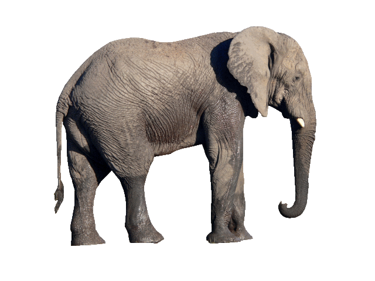
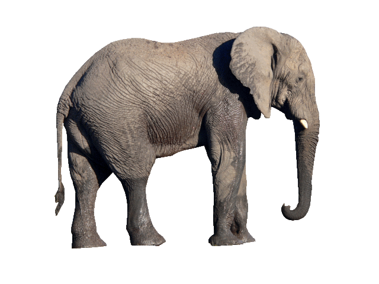

organisation, The Sheldrick Wildlife Trust (SWT) embraces all measures that
complement the conservation, preservation and protection of wildlife.
Born from one family's passion for Kenja and its
wilderness, the Sheldrick Wildlife Trust was
established 45 years ago and best known for its
Orphans' Project, the first and most
successful elephant orphan rescue and
rehabilitation program in the world. The Sheldrick
Wildlife Trust is a pioneering conservation
organisation, dedicated to the protection of
wildlife and the preservation of habitats in East
Africa
The Sheldrick Wildlife Trust is based in Nairobi,
Kenja, with afield headquarters bordering Tsavo
East National Park. The Sheldrick Wildlife Trust is
a seperately registered charity in the UK and
is directly supported by Sheldrick Wildlife Trust
USA, a registered 501(c)(3) in the United States.

Our conservation partners play a vital role in
protecting africa's threatened wildlife and
conserving habitats, while our corporate friends
support us in a plethora of ways, from percentage
of sales contributions to skill sharing, all with the
inention of giving back to wildlife.
We work across Kenya to secure safe heavens for
wildlife. We not only work to protect elephants
and rhinos, but entire ecosystems and the diverse
flora and fauna sustained in this places of
stunning natural beauty.

We open our doors to the public for one-hour
every day. This is special, time-honoured
tradition in which we invite the public to learn
more about our conservation work and meet the
orphans in our care. Those wishing to visit need to
make abooking in advance, to ensure there is
availability.
Flora and fauna in Kenja face a myriad of
challenges that treatened their long term future.
Few ecosystems still exxist were the impact of
human acrivity has not been felt, threatening
biodiversity and thr long trrm survival of many
species.

We protect a number of treatened
and endangered species across Kenja including
black and white rhinos, as well as iconic animals
like African elephants. By protecting keystone
species, we ensure a plethora of other animals and
ecosystems continue to survive and, more
importantly, thrive.
Over the years the work of the Sheldrick Wildlife
Trust has been featured in numerous publications,
television productions and films. This has helped
more people around the world better understand
the nature of elephants, rhinosv and other wild
species and importantly the efforts being taken by
the Trust to protect them.
 

Project
News
Get Involved
About
Donate
Press Kit
Events
Visiting
Volunteering
FAQs
Contact
Kenya
UK
USA
Get our emails
Find us on
The David Sheldrick Wildlife Trust, known as Sheldrick Wildlife Trust, is a charity in Kenja, a registered in England
and Wales number 1103836, and is supported by The David Sheldrick Wildlife Trust USA, Inc. a 501(c)3 in the United States (EIN 30-0224549)
Copyright © 2021, The David Sheldrick Wildlife Trust. All Rights Reserved.